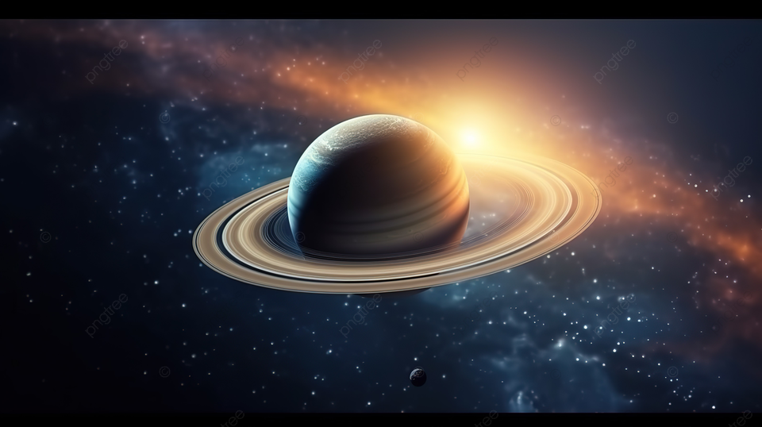

Saturnus adalah planet keenam dari Matahari dan merupakan planet terbesar kedua di tata surya setelah Jupiter. Saturnus dikenal karena sistem cincinnya yang spektakuler, yang terdiri dari miliaran partikel es, debu, dan material berbatu. Diameter Saturnus sekitar 116.460 kilometer, dan seperti Jupiter, Saturnus adalah planet gas raksasa yang sebagian besar terdiri dari hidrogen dan helium. Saturnus memiliki lebih dari 80 satelit alami, termasuk Titan, satelit terbesar yang bahkan lebih besar dari planet Merkurius. Titan memiliki atmosfer tebal dan lautan metana cair, menjadikannya salah satu objek paling menarik dalam tata surya untuk penelitian astrobiologi.
Fakta menarik tentang Saturnus adalah bahwa planet ini memiliki densitas yang sangat rendah, bahkan lebih rendah dari air. Jika ada lautan besar yang cukup besar, Saturnus akan dapat mengapung. Saturnus juga memiliki angin yang sangat kuat, dengan kecepatan mencapai 1.800 kilometer per jam di atmosfernya. Misi luar angkasa seperti Cassini-Huygens telah memberikan banyak data penting tentang Saturnus, termasuk rincian struktur cincinnya dan eksplorasi Titan. Saturnus tetap menjadi salah satu planet yang paling menakjubkan dan penuh misteri dalam tata surya.
Untuk informasi lebih lengkap tentang saturnus silahkan kunjungi Wikipedia